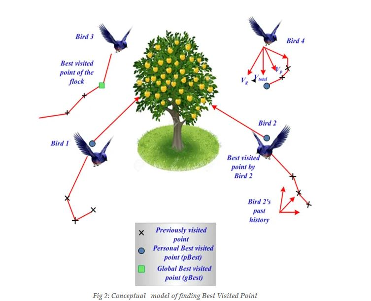
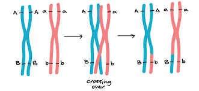
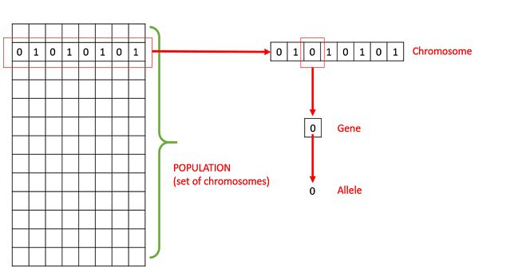
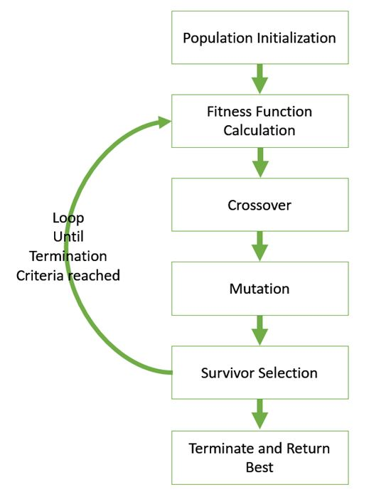
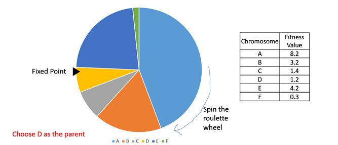
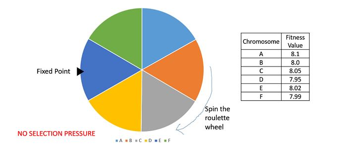

Derivative-free Optimization
Tutorial for Genetic algorithms and Simulated Annealing
Genetic Algorithms
Optimization - a very , very brief primer!
So really, what is optimization? Since this post talks about Derivative - Free Optimization so to speak, it is assumed that the reader is familiar with the basics of optimization. If you are not, no need to fret this section provides a very, very brief intro, frankly, there is no need as such to have a thorough foundation on the underlying mechanism of optimization to understand the following discussion. But like many frameworks, the entire reason why Derivative free methods exist, such as the ones discussed here, Genetic Algorithms and Simulated Annealing is based on some of the issues encountered in the old-school methods. So it would be a great idea to have some superficial understanding of what's going on, just so that we can appreciate the innovative ideas that have solved them
Now, to business. Optimization at a very , very basic level is to solve a certain problem optimally . For example, if you have your final exams for the semester, How would you try to maximize your marks? Or how would a logistics company decide to deliver parcels in a particular city while ensuring that it takes the least amount of time and fuel , cause well, time is money and fuel ain't cheap! There are many, many such problems at the heart of the modern world Many modern techniques such as the ever-so popular Machine Learning that has become so omnipresent today from chatbots and virtual assistants to giving Recommendations on Netflix on what to watch next are also at their very core - optimization paradigms Since optimization is so useful, it stands to reason that bottlenecks affecting optimization procedures should be quite important as well and indeed they are, as a matter of fact billions of dollars are spent in R&D just to get rid of these bottlenecks. One such bottleneck that has stymied the devolopment of better algorithms has been the over-reliance on "derivatives" . An enormous majority of today's optimization algorithms including those all-powerful Neural - Networks rely a great deal on Derivative based methods. To understand what a derivative based method does consider the following ; given some function that you want to optimize ( henceforth : the objective function ) say,
$$ f(x) $$
the method would use its derivative to get some information to reach the optimal solution. High school math is enough to let us know that
$$ f'(x) = 0 $$
at an extremum and a basic knowledge of multivariable calculus extends this to
$$ \nabla f(\bf{x}) = \bf{0} $$
If you want more information to converge faster to a solution, then you can use higher derivatives or their approximations. Modern methods like Automatic Differentiation makes computing derivatives easy and since the algorithms using these are straightforward to implement and have robust guarantees of "converging" , they are used quite a great deal. Even so, they do suffer from certain issues that necessitates the ideas discussed in our post. We will be looking into those in the next section, and that's all for the basics of Optimization. For a more detailed introduction on optimization and derivative based methods, there are some great videos and courses out there on You tube , not to mention the bible - Numerical Optimization by Nocedal and Wright which is a great read.
Why do we need Derivative free methods?

The above figure shows a realistic situation that happens when we use Derivative based methods. If you could recall from above, the idea behind derivative based methods is to use characteristics of the derivatives of the objective function to get closer to an optimal value. This works quite well for your usual sort of functions that are well behaved such as convex functions ("Bowl shaped functions" : Your task is to reach the bottom of the bowl, the derivative provides the direction of steepest descent and then whoosh! Off you go! Just to see why this is so fast, take a bowl and use your fingers to replicate the process, you would reach the bottom in no time!) but goes wonky for other functions that are not so well behaved. This is because "derivatives" are unable to distinguish between locally and globally optimal solutions.
To understand what this means, look at the figure above, Suppose you are a mountaineer out to conquer the highest mountain on a range, you have got a bunch of peaks there on your landscape. Look at the point labelled Start Here Randomly , what derivative based methods would do is to start climbing upward, they would ensure that you get to the top of the nearest hill, but then you're stuck! You can't take a single step ahead because the derivatve which is sort of a slope monitor tells you that the terrain doesn't go upward from here ! So according to your monitor you have reached the peak, but you being a well-prepared person have already done your survey and are aware beforehand that there is a much higher peak ahead! So now you are stuck and angry, but fret not there were many others in the same fix as you were while going through different applications in engineering and science, applications that are quite necessary to the functioning of various aspects of society that we take for granted today. So the answer to this problem is to include an entirely new monitor to understand the terrain - i.e, to consciously chose to avoid using the derivative which is why these methods are called derivative-free methods. There are other reasons to adopt derivative-free based methods but they are mostly computational in nature i.e relate to the problems encountered in getting the derivative in the first place. The above discussed "landscape problem " shows on the other hand a much more intuitive need for going "beyond" the derivative in the first place. Many of the methods we will discuss below are often grouped together in the banner of meta-heuristics (Meta : Latin for beyond, heuristics - methodology of solving a problem, in this case referring to the derivative based methods.)
Now, that we have a certain need for Derivative free methods. Let's get cracking !
Genetic Algorithms
Before we begin, We would like to state that the phenomenon of optimization is far more general than we thought. While the way in which humans perform decision making can be modelled as an optimization scenario, the broader behaviour of nature may be modelled through an optimization perspective as well. To understand what we are trying to say, look at the figure below

The image shows a flock of birds trying to find some fruit to eat. From observation, people observed that any movement of the flock followed three simple rules :
- Move in the same direction as your neighbours
- Stay close to your neighbours
- Avoid collisions with your neighbours
Surprisingly, these simple rules ensure that the flock finds food in the shortest period of time! What we have therfeore is an optimization paradigm where the problem is to find sufficient food for the entire flock in the shortest possible of time! Many such examples are abound in nature and since the behaviour of nature is often based on certain simple rules (Wouldn't be so widespread otherwise! If birds had to sit down and run robust calculations to calculate how to get food the flock would have died out long ago), they tend to be derivative -free and quite general. For example , the following amazing article Math of the Penguins shows how a flock of Emperor penguins huddle in the most efficient structure possible in order to keep warm in the frigid winter, all based on the simple rule that every penguin wants to stay warm and would thus migrate to a warmer location to get the warmth it needs. The innate simplicity, generality and the understanding that such methods can converge to the optimal solution inspired scientists and engineers to design many nature inspired algorithms for optimization. (Note : we mentioned that nature inspired paradigms "could" converge to the solution, till date there is no rigid theory on how and why these methods can converge thus making it more of an empirical framework which is why it is often not preferred despite its performance. Moreover, the selection of parameters is always a challenge. For our discussion, we would sweep such issues under the rug for the most part while keeping in mind that they exist, since these methods are quite effective practically which makes it worth to have a proper discussion!)
The paradigm that we are going to discuss in this section - namely, Genetic Algorithms are a specific kind of nature inspired optimization algorithms which are inspired from genetics and Darwin's theory of evolution
Another brief summary - This time a primer on biology!
The theory of genetics and Darwin's theory on evolution are so widespread that an introduction sounds redudant. Even so, we provide a brief refresher in this section with the definition of some terms that will be encountered in our discussion but are not so well known.
The genetic basis of inheritance suggests that the way individuals of a species pass on their traits to their offspring is through information encoded in their genes, which are basically sections of chromosones which are themselves a bunch of DNA molecules, found in the cells of the individual organisms. How genes interact in order to come up with the various traits such as height or colour of the eyes is beyond the scope of any introductory material but we may assume for the sake of simplcity that genes have certain possible values termed as alleles . Different alleles in a chromosome together determine how a certain trait is expressed. We define any observable characteristic such as height or the colour of eyes to be a phenotype . All the alleles displayed in the various chromosomes that determine a phenotype are the Genotype .
Now, we come to the discussion on evolution. If we assume that the genotype of an organism remains constant throughout its existence then we have no diveristy - which is not ideal given that the environment is always changing and thus, forcing the organism and the species to respond in different ways. Thus, the changing environment throughout the course of our history has forced organisms to respond in different sorts of ways in order to avoid becoming extinct , i.e by showcasing different phenotypes which implies that we need different genotypes. Thus, we come to the concept of darwinian evolution, i,e "Survial of the fittest", Therefore "evolution" which for our case we assume has the meaning that the organism shows the optimal fitness in a given environment has to proceed by a modification of the genotype guided by some fitness measure so that the organism can survive better. Since, the genotype has to be modified in some manner, how can organisms go about doing this? The first and the easiest way, is to change the genotype on their own, since there is no explicit way for organisms to explicitly tell their genotype to change in a certain way, any such change has to be random in nature(Btw , if you are interested the recent Nobel Prize in medicine was given for the CRISPR method which is an innovative method that allows for explicit editing of the genotype). Any such random change or mutation (You would have encountered this term in the X-Men movies for example, with exactly the same meaning !) allows the organism to showcase different phenotypes, allowing it to adapt better to the changing environment during its lifetime. But clearly , mutation changes do not seem to allow for increase in fitness of the species as whole! Thw way nature solves this problem is by ensuring that during sexual reproduction when new offpsring are generated, there is a significant possibility for traits from either of the two parents to be passed on to the offspring, again as there is no regulatory procedure which trait gets passed on to which offspring is entirely stochastic however over a long time span the proportion of the benificial phenotype will be magnified since the organisms without the said benificial trait would have died out! This explains how evolution and extinction of species occurs in nature. This transfer of trait from the genes of the two parents is termed as "crossing-over" (a detailed description of the nomenclature would require a digression on meiosis which is the type of cell division occuring in the reproductive or "germinal" cells such as the sperm or the egg.) Intuitively, one can think of the crossing over process in the following manner : keep two chromosomes next to each other take some alleles from one and interchange it with the other to get a certain resultant chromosome. This is also made clear in the figure below:

The above image shows how crossing over occurs in genes during cell division. That's all the information we would need from biology. Now with the intution in place let's get to how we would be actually using "Genetic Algorithms"
The formulation of Genetic Algorithms
Taking inpiration from our earlier discussion, our objective function should represent the environment in some sense and suppose we have a bunch of "solutions" or a population of initial candidates through evolution we should get a species that shows optimal fitness for our situation. To ensure that our formalism is consistent with the biological one, define a chromosome to be an array of possible values that represent our solution candidate. A gene is a certain index in our array and the value at that index is the allele. The set of chromosomes we have at one point can be said to represent our genotype. The alleles themselves can be binary , integer or real valued depending on our choice of representation, our phenotype in this case represents the actual objective function and the values lying in its domain. We modify our genotype based on a fitness function that is designed to ensure that our final genotype represents a phenotype that solves our objective function optimally. Lastly, noting that the genotype and phenotype may have entirely different sets of values forces us to contruct a mapping from the possible values of the phenotype to the genotype and back so that we can get the genotype behind a phenotype and a phenotype for a certain genotype. The following figures showcase our formalism.


Naturally, the full power of our evolutionary mechanism wouldn't work without including the phenomena of mutation and crossing-over . We can do this in the following way, with a certain probability M p we perform an operation on a chromsome such as swapping the values of two indices or randomly changing the value at a particular gene etc, such operations clearly are an analogue of mutation of natural genes. A crossing over now, is any operation that combines two chromosomes in a certain way to get a new resultant chromosome. Now, suppose we have an initial population, say F 0 after doing an initial fitness calculation we mutate individuals and then perform crossing-over to get a new population, F 1 . Now, it may be the case that F 1 has much more individuals than F 0 in order to avoid increasing storage complexity with excessive redundant candidates, we take a leaf out of Darwin' book and only consider the Fittest, this so called elitism , is one of many selection procedures which are used to ensure that succesive generations have controllable population. With the basic formalism sorted and remembering our intuition from Darwinian evolution, we can construct an algorithmic procedure for performing a Genetic Algorithm as follows :

Some tricks of the trade on How to implement a Genetic Algorithm
How to initialize the population?
We can choose to either populate our initial choices randomly or by employing a certain assumption. While the fomer method may converge much slowly after several rounds of experimental research it has been proven to converge to a more optimal solution, intuitively this is because the latter method has lesser "diversity" and thus can only show a certain number of possible phenotypes. The trick that is used commonly these days is to combine both methods, add several randomly initialized chromosomes while adding some "good" ones as well, this can cause the convergence to be fast while ensuring that the advnatge of randomization is not lost as well.
How to define a fitness measure?
This is a very tricky issue since there isn't any standard way to define a fitness measure with the measure being highly specific to the task in hand. But here are some rough guidelines that work often in practice :
- A good fitness measure should be easy to evaluate i.e easy to compute, saving on the algorithm running time
- A good fitness measure should be as well-behaved as possible i.e properties such as continuity and differentiability are a big bonus and if the alleles are integer based or binary then a function like the digital sum i.e the sum of all non-zero values is a good choice if the problem allows
- Most importantly, a good fitness measure should mimic the actual objective function i.e optimizing the fitness function in the genotype space should be equivalent to optimizing the objective in the phenotype space.
The last requirement is the most tricky, but also the most necessary one, otherwise our Genetic algorithm would simply not work!. In fact, the priority order to be followed is 3>2>1 when designing a fitness measure but it's crucial to ensure that we don't abandon lower priority requirements entirely.
How to choose Parents?
To understand why we need this discussion in the first place, let's go back to the problem that motivated survival selection. Once we perform a crossing-over on the entire population we end up getting too many possibilities for the next generation! Apart from survival selection which is needed to reduce the storage complexity, We also need to reduce the time complexity of the crossing-over step somehow in order to get a practically fast algorithm. The easiest way to do this is by ensuring that we can choose the right sort of "parents". That is by performing the crossing over only on a certain subset of the population we can ensure that diversity is propagated optimally whilst not overburdening our resources this is inspired from nature too, specifically the phenomenon of Sexual Selection which was also discussed by Darwin in his seminal work, On the orgin of Species . The colourful plummage of peacocks for example is an evolutionary adaptation that allows for a peahen to select an optimal mate. We would not go in to sexual selection in detail here, but there are a great many works out there that explain and illustrate this idea beautifully. To get back to the issue we have at hand, some strategies that are used in practice for parent selection are as follows :
-
Fitness Proportionate Selection is one of the most popular ways of parent selection. In this every individual can become a parent with a probability which is proportional to its fitness. Therefore, fitter individuals have a higher chance of mating and propagating their features to the next generation. Therefore, such a selection strategy applies a selection pressure to the more fit individuals in the population, evolving better individuals over time. Consider a circular wheel. The wheel is divided into n pies, where n is the number of individuals in the population. Each individual gets a portion of the circle which is proportional to its fitness value. Two implementations of fitness proportionate selection are used in standard practice
-
In a roulette wheel selection, the circular wheel is divided as described before. A fixed point is chosen on the wheel circumference as shown and the wheel is rotated. The region of the wheel which comes in front of the fixed point is chosen as the parent. For the second parent, the same process is repeated. It is clear that a fitter individual has a greater pie on the wheel and therefore a greater chance of landing in front of the fixed point when the wheel is rotated. Therefore, the probability of choosing an individual depends directly on its fitness. Implementation wise, we use the following steps −
- Calculate S = the sum of a fitnesses
- Generate a random number between 0 and S.
-
Starting from the top of the population, keep adding the finesses to the partial sum P, till P exceeds S
- The individual for which P exceeds S is the chosen individual
The following image shows roulette wheel population.

-
Stochastic Universal Sampling is quite similar to Roulette wheel selection, however instead of having just one fixed point, we have multiple fixed points as shown in the following image. Therefore, all the parents are chosen in just one spin of the wheel. Also, such a setup encourages the highly fit individuals to be chosen at least once. An image showcasing this procedure is as follows :

It is to be noted that fitness proportionate selection methods don’t work for cases where the fitness can take a negative value.
-
-
Our next strategy is the so called Tournament Selection. In K-Way tournament selection, we select K individuals from the population at random and select the best out of these to become a parent. The same process is repeated for selecting the next parent. Tournament Selection is also extremely popular in literature as it can even work with negative fitness values. The following image showcases this strategy.

-
We will now look at Rank Selection. Rank Selection also works with negative fitness values and is mostly used when the individuals in the population have very close fitness values (this happens usually at the end of the run). This leads to each individual having an almost equal share of the pie (like in case of fitness proportionate selection) as shown in the following image and hence each individual no matter how fit relative to each other has an approximately same probability of getting selected as a parent. This in turn leads to a loss in the selection pressure towards fitter individuals, making the GA to make poor parent selections in such situations.

In this, we remove the concept of a fitness value while selecting a parent. However, every individual in the population is ranked according to their fitness. The selection of the parents depends on the rank of each individual and not the fitness. The higher ranked individuals are preferred more than the lower ranked ones.

How to perform mutations , crossing-over and Survival Selection?
We would not go into detail on the procedure of performing mutations and crossing-over, simply because there are too many possibilites. The important thing is to note that for mutation with a certain probability we randomly change individual chromosomes and for crossing-over we are expected to use two chromosomes in order to get a third one. There are many means to perform survival selection apart from the elitism discussed earlier there is also the aging procedure in which the indvidual from a certain generation if it remains as such for a predetermined N number of succesive generations then it will be automatically removed at the N+1 th succesive generation. This procedure clearly mimics the process of aging and death found in nature. There are even more means by which we can ensure that survival selection but the key point is to note that we trim the population after every generation.
How to know that convergence has been achieved?
It has been observed that initially, the Genetic Algorithm progresses very fast with better solutions coming in every few iterations, but this tends to saturate in the later stages where the improvements are very small. We usually want a termination condition such that our solution is close to the optimal, at the end of the run. Usually, we keep one of the following termination conditions :
- When there has been no improvement in the population for X iterations.
- When we reach a certain Y number of generations.
- When the objective function value has reached a certain pre-defined value.
It is important to note that all the tricks discussed above are highly generic and that is upto the designer of the algorithm to ensure how they implement the algorithm for the problem in hand. Even so these rough guidelines, showcase a certain direction that can be kept in mind for a designer to get a more efficient algorithm.
Demo Problem
In this section, we solve a problem step by step using python code in order to illustrate the concepts that have been discussed above. Let us look at the graph of a simple 1-D function. $$f(x) = sin(x)+sin(\dfrac{10x}{3})$$

The function has 4 local minimas in the range (0, 8). Gradient-based methods are very efficient methods to find local minimas. But, such algorithms would fail when presented with such a function and asked to find the global minima. It will heavily depend on the starting condition, if the solution found is global or not. For this example, if the initial point was in the range (4.5 , 6) it would find the global minima.
Let us now try and use the newly learnt Genetic algorithm, and test out how it works on this problem. But first, we need to implement the algorithm. So let's get ready to get our hands dirty.
Genotype Representation
The first step in the genetic algorithm is to formulate the solutions to the problem (chromosones) as a binary string. This is sometimes the most crucial step in formulating a GA, and convergence may heavily depend on the design choices considered here.
For us, the given problem is a 1-D function that takes a real number as an input and returns a real value. We know that the domain of the function is between (0,8). We can this observation to our advantage. The idea is quite simple, and here it is. Let's say we want to represent 2.048 in a binary representation, we first multiply it by 1000 to get 2.049*1000 = 2049, and then find the binary representation of the number which is 100000000001. To represent all numbers between 0 and 8 with upto 3 decimal places, we could use a 13-bit binary representation (2^13 = 8192 numbers) and use it to represent all numbers with 3 decimal places between (0, 8.192).
Thus, we get the real valued representation for any 13-bit chromosome. In python, we will define a function for the conversion:
Let us look some random binary strings and their corresponding values -
Population Initialization
We initialise the population of chromosomes randomly. We sample random 13-bit strings. We use the numpy libray for this purpose. The size of the population is an important choice to make. Let's generate a population of size 10.
Fitness function
We have a minimization objective for our function. Generally a fitness function is a metric for how fit the candidate is, thus, the larger the fitness the better. Thus, we use -f(x) as the fitness function. This ensures that our minima will have the maximum fitness.
Parent Selection
We use k-way tournamet selection for parent selection.
Crossover
We use uniform crossover to produce new offsprings.
Mutation
Survivor Selection
We remove the most unfit parents and replace them by the newly generated offpsrings and set them as the new population for the next generation.
A fully working example
Now that we have looked at and understood each and every component of the genetic algorithm individually, let's look at a fully working example. To make the code cleaner, we will first define a python class, and then put the functions as the methods of the class.
Yay! All the hardwork is done. Now that we have our working example, let's run it!!
Great! The solution matches with the actual global minima. Let us visualize how the genetic algorithm performs as the generations progress.
It is clearly seen that the candidates keep getting better as the generations progress and finally all of them converge to the global minima, which is when the algorithm stops.
Exercise
Try changing the hyper-parameters, i.e, the population size, number of parents, number of children, mutation probability and see the effect on covergence.
Simulated Annealing
Simulated Annealing is another metaheuristic based method of optimization inspired by a natural phenomenon like Genetic Algorithm. While genetic algorithms are inspired by biological evolution, simulated annealing is motivated by the metallurgical process of annealing. When a piece of metal is heated, its potential energy increases and crystal structures become randomized. As it is cooled the mobility of atoms decreases and crystal structures start forming. The nature of crystals formed depends on the rate of cooling. If cooled slowly there is enough time for crystal growth and ordered crystal structues are formed, whereas if cooled very fast, a randomized structure is obtained as there is no time for the crystals to grow.

Left image shows randomzied crystals due to fast cooling whereas the right image shows ordered crystals when cooled slowly
Optimization Ideas
Energy Distribution
Any system in thermal equilibrium at temperature T has its energy distributed according to the Boltzman distribution. The ratio of probabilities of state i and j depends only on the energy difference of the two states. $$ \dfrac {p_i} {p_j} = e^{- \dfrac {\Delta E} {KT} } $$

We observe that as the temperature falls, the probability ratio tends towards 0. This means that probability of state i becomes extremely low and the entire energy can be deterministically said to be at state j. This transition happens more rapidly when the energy difference between the states is large. This is intuitive too as the randomness is present only in nearby states unless temperature is very high.
Translating ideas into algorithm
Imagine now we wish to minimize a multimodal function in a certain search space. The function can be either discrete or continuous. We choose a certain initial point x0 and a high temperature parameter value T0. Now, we generate another point in the neighbourhood of the initial point x1. We can imagine these points as states and the value of the function at these points to be their corresponding energies say f(x0) and f(x1). Now we have to decide if we should move to point x1 or reject it. If the value of the function decreases we accept it similar to other search methods. On the other hand, if the value of the function increases we don't reject it straight away as we would do with conventional algorithms. Instead we reject it with a probability. This enables the algorithm to not get stuck at a local minima as sometimes steps are taken which increases function value. To control the rejection probability we model it by the Boltzmann distribution parametrized by a temperature parameter. Initially when temperature is high, exploration of state space is high but as the temperature decreases it accepts lesser and lesser values when function value increases and ultimately homes in on a certain minima. If the temperature is reduced slowly, enough exploration is done, so most likely it will find the global minima approximately.
Demo Problem
Let us try to find the global minima of a multimodal function. Although the algorithm described here is equally applicable for higher dimensions as well as discrete functions we choose a 1D continuous function for keeping things simple. Let us define the optimization problem and visualize the objective function to see why it cannot be solved by traditional algorithms
$$ Minimize \: f(x) = sin(x) + sin ( \dfrac{10} {3} x) \\ subject \; to \; 0 \le x \le 6 $$
We see that the function has three local minimas and 3 local maximas
Generating the neighbours and choosing parameters
If we had a discrete function then it can be represented by a graph which clearly shows which states are reachable from a given state. Since we have a continuous function we need a judicious heuristic for generating the next state. One way to do this would be to pick an initial point at random from the given range and then model a Gaussian distribution around this initial point set as the mean. We know that nearby point probabilities are greater than far away ones, so we can set three times the standard deviation as half the difference between upper and lower bounds of the function. When we sample from this distribution we will get a point within the range 99% of the time. In case we get a point outside the bound we simply resample. There are several techniques of sampling from a given distribution like Box Mueller, rejection sampling and Hastings Metropolis algorithm for large dimensional problems. In this example we will simply use the built in numpy function.
This function takes an initial point x0, the lower and upper bounds in x_bounds and number of samples to generate as n. It sets the mean as x0 and three times standard deviation as half of the domain length and returns n samples satisfying the constraints. The values of the function are less than 10 and we may choose the starting temperature as 1. The cooling schedule too is a hyper parameter we need to choose. There are variations like Thermodynamic Simulated Annealing where temperature is modelled as a complex function of the states. In this case we simply reduce the temperature 1.8 times after every 4 iterations. The stopping criteria is a maximum number of iterations or when the temperature falls below \( 10^{-5} \).
The acceptance criteria
After generating the point x1 we calculate f(x1)-f(x0). If this is positive the point is accepted and the process is repeated. If this is negative we calculate \( p = e^{- \dfrac{ f(x1) - f(x0) } {T} } \)
We generate a random number r between 0 and 1. If p is greater than r then x1 is also accepted despite the functional value increasing. If r is greater than p, the point x1 is rejected and the process starts again. Note that in the implementation, we need not check if f(x1)-f(x0) is positive as in this the p>1 and this will always be accepted. This is implemented by the two functions acceptprob and acceptreject
Putting it together
Here we keep reducing the temperature even if steps are getting rejected to keep hardening the solution. x0 is chosen to be 2.5 which is a hard point for the algorithm as there are two local minimas on either side of it. We stop the iteration when either there are 100 accepted points or the temperature falls below \( 10^-5 \). Running this once we see it reaches x=5.14 after 17 steps. From the graph of the function we can see that this is approximately where the global minima lies.
We see the temperature decreases and finally the global minima is found. For a robustness check we initialize the starting point with 3 different values and compare the number of steps required. All other hyper parameters are kept fixed.
| Starting Point | Global Minima | Number of Steps |
|---|---|---|
| 1 | 5.13 | 18 |
| 2.5 | 5.14 | 17 |
| 6 | 5.15 | 12 |
We observe that the closer initial value is to the global minima, lesser is the number of steps required


-By R Sainiranjan, Sayantan Halder and Kaushal Bhogale